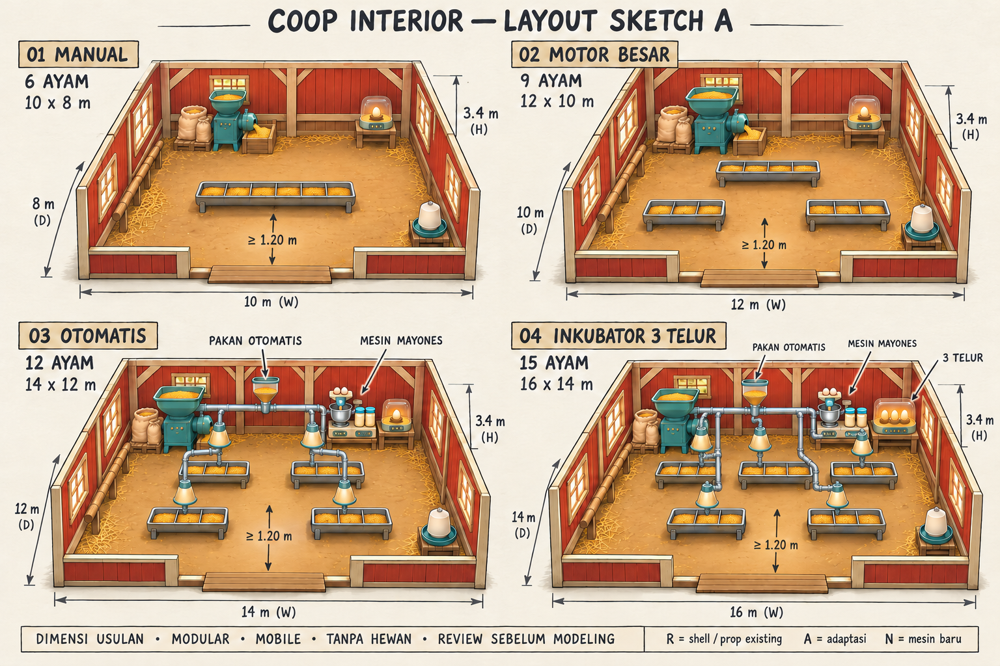
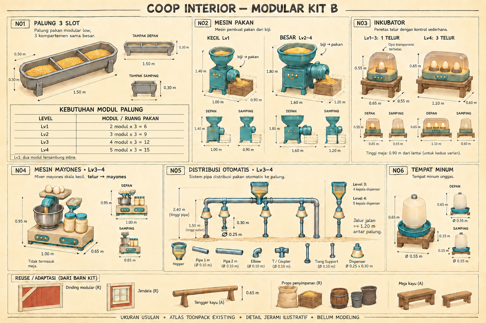

Style merah-krem dan mesin teal, konsisten dengan keluarga Barn. Ukuran merupakan usulan. Sketch saja; belum modeling atau mengubah Unity.
| Level | Kapasitas | Ruangan | Peralatan |
|---|---|---|---|
| 1 | 6 ayam | 10 × 8 m | Pakan kecil, penetas 1 telur (usulan) |
| 2 | 9 ayam | 12 × 10 m | Pakan besar, penetas 1 telur (usulan) |
| 3 | 12 ayam | 14 × 12 m | Pakan besar, penetas 1 telur (usulan), mayones, feeder otomatis |
| 4 | 15 ayam | 16 × 14 m | Pakan besar, penetas 3 telur, mayones, feeder otomatis |


Ukuran dan aturan utama di SKETCH_SPEC.md menjadi acuan jika anotasi gambar berbeda. Kapasitas project yang lama masih 6/12/20/30; proposal baru 6/9/12/15 belum mengubah gameplay.